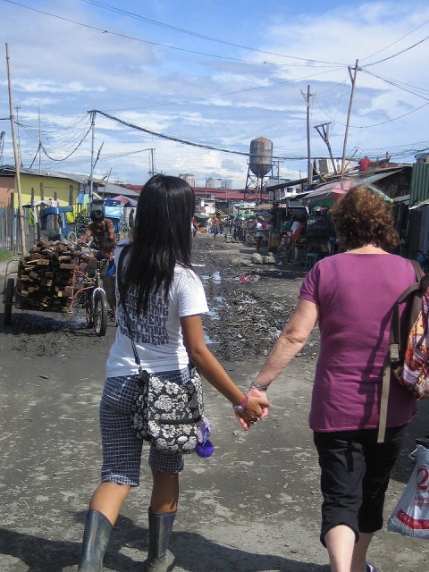
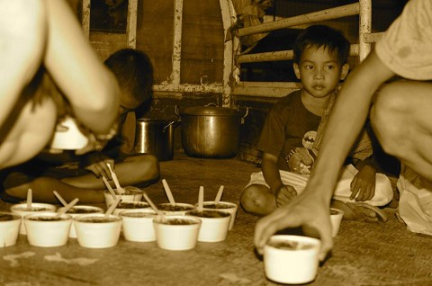

“OF COURSE POLITICS MATTER!” That would have been me three years ago. As much as I hate to admit it now, I was obsessed with politics. I would listen to conservative talk radio in the car, read all the news, volunteer at the upcoming Republican candidate headquarters and argue with whoever was willing to listen.
But as my relationship with Jesus began to grow, I began to question my obsession. What I thought a good American Christian should believe was beginning to shift. I began to realize that the anger I felt over politics was not what Jesus wanted of me. Jesus was calling me to a higher purpose, a purpose based in love.
This disconnect between me and the world of the right only grew deeper as I traveled the world. Now, no longer was I relying on news and political commentary to understand the world, I saw it, I lived it.
The dumps and prostitution rings of the Philippines were indeed unjust, the orphaned children in Swaziland due to the AIDS epidemic was heartbreaking, the government corruption in Mozambique was frustrating and the injustice of young boys and girls caught in Honduran gangs was unacceptable but with all this injustice I saw hope.


Hope that was not just another political tagline. It wasn’t the face of Obama or Romney making the difference, it was individuals. It became apparent that despite anything done by our government, amazing changes were happening in these places. Individuals who have answered the call to a purpose bigger than high political office were changing the world.
Sharon from the Philippines is bringing hope and redemption to prostitutes and street kids. Angie is providing a mom and education to orphaned boys. The Peterson’s, a Michigan family living in Swaziland, are feeding and loving hundreds of orphans daily.


As our team was unloading boxes of food to feed the Swazi kids, my jaw dropped as I realized all the food had come from a local organization in small-town Minnesota. An organization I had never heard of was providing food for an entire village of people, that without, would have gone hungry.
I could go on and on with stories of hope from around the world but today in the heat of an election year I just want to say:
“IT WILL BE OK.”
When Jesus spoke again to the people, he said, “I am the light of the world. Whoever follows me will never walk in darkness, but will have the light of life."
John 8:12
*Reposted from a blog written in 2012